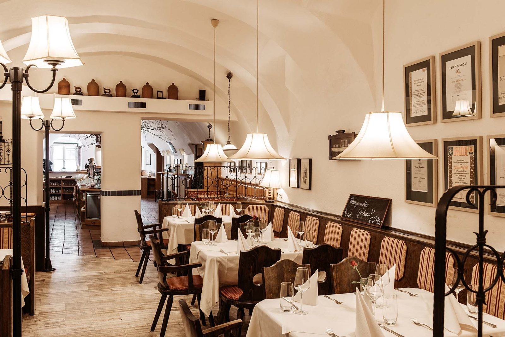

Wirtshaus
Bodenständig regionale Küche: vom Jogglandmostbraten über das Wienerschnitzel bis zum Zwiebelrostbraten. Durchgehender Küchenbetrieb, von 14.00 bis 17.30 Uhr mit kurzer Karte.
Der Gasthof „Zum Brauhaus“ steht seit sechs Generationen am Hauptplatz von Hartberg: regionale österreichische Küche, zapffrisches Bier und zehn individuell gestaltete Zimmer im Altstadthotel.
Montag RuhetagDi–So ab 7.30 UhrDurchgehend Küche

Bodenständig regionale Küche: vom Jogglandmostbraten über das Wienerschnitzel bis zum Zwiebelrostbraten. Durchgehender Küchenbetrieb, von 14.00 bis 17.30 Uhr mit kurzer Karte.
Zehn gemütliche, individuell eingerichtete Zimmer auf modernem Standard – 2013 komplett erneuert, Frühstücksbuffet mit Produkten heimischer Lieferanten inklusive.
Das Frühstücksbuffet gibt es auch, wenn Sie nicht bei uns nächtigen: Dienstag bis Sonntag von 7.30 bis 10 Uhr, ab € 17,50 pro Person mit Reservierung.
Ab Mittwoch, 8. Juli 2026, jeden Mittwoch bis Mitte August (Ausnahme: Mittwoch, 29. Juli – kein Grillabend), Beginn ab 18.00 Uhr, mit Blick auf den Hauptplatz.
Saftige Steaks, feiner Fisch, hausgemachte Cevapcici, frische Salate und viele Beilagen – frisch vom Grill. Tisch reservieren
Drei Nächte im Altstadthotel, Doppelzimmer ab € 116,– pro Nacht für zwei Personen (Einzelzimmer ab € 65,–), Frühstücksbuffet, Stadtführung (€ 6,50 pro Person) und Oststeiermark-Box.
Den beliebten Wertgutschein gibt es zum Ausdrucken zu Hause – oder gleich zum Weiterschicken an die beschenkte Person. Einlösbar im Wirtshaus und im Altstadthotel.
Wir haben Platz in unserem Team: Koch, Jungkoch, Küchenhilfe und Restaurantfachkraft – mit Mitarbeiterunterkunft im Haus bei Bedarf und 5-Tage-Woche.

An Allerheiligen 1860 schenkte Johann Großschedl in Hartberg zum ersten Mal aus. Seither führt die Familie das Haus – heute in sechster Generation durch Werner Großschedl jun.
Die hauseigene Brauerei ging einst an die Brüder Reininghaus und wurde später stillgelegt. Das Reininghaus Bier bekommen Sie bei uns bis heute zapffrisch – neben einigen anderen Bieren.

Auch am Montag vergeben wir Zimmer – die Rezeption ist an diesem Tag aber nicht besetzt. Informationen zu Anreise und Check-in erhalten Sie bei der Buchung.
Neuigkeiten aus dem Wirtshaus und dem Altstadthotel, Grillabende und Angebote – per E-Mail, jederzeit abbestellbar.


Reservieren Sie online – oder rufen Sie einfach an, wenn es heute noch sein soll.